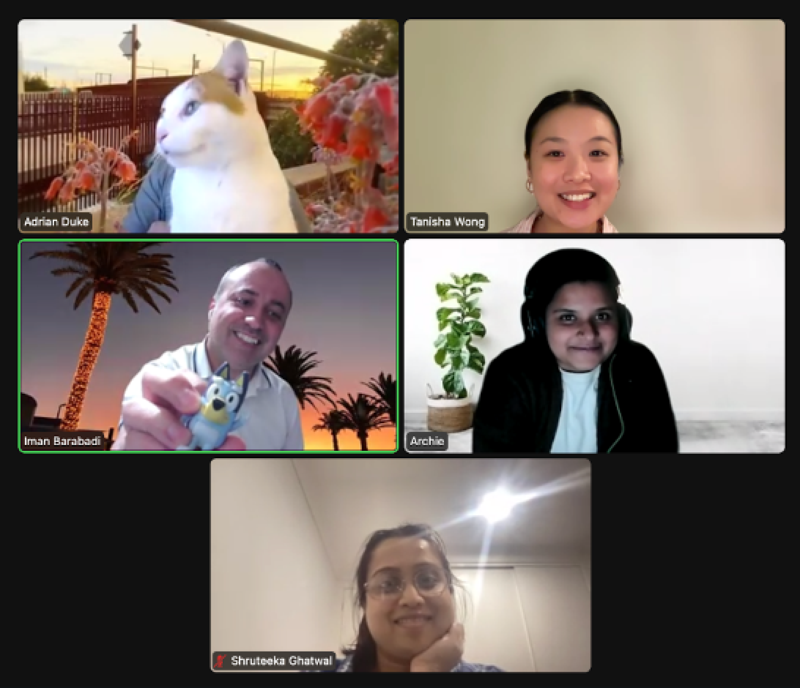

Design a solution that helps connect those who need food assistance with organisation's
food surplus and create a process for users who experience embarrassment and shame with
seeking food relief.
● Adrian Duke
● Archana Ramakrishnan
● Iman Barabadi
● Shruteeka Ghatwal
● Tanisha Wong
The team is made up of Monash Uni UX Students.
Collaboration was hugely important in our project and we each
had input into each area of the project.
My main contributions were in project management, information architecture
and the first High Fidelity Prototype.
